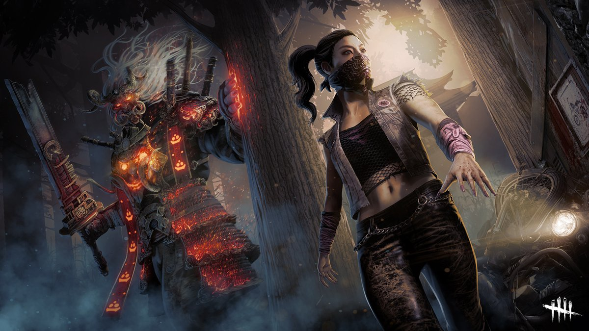
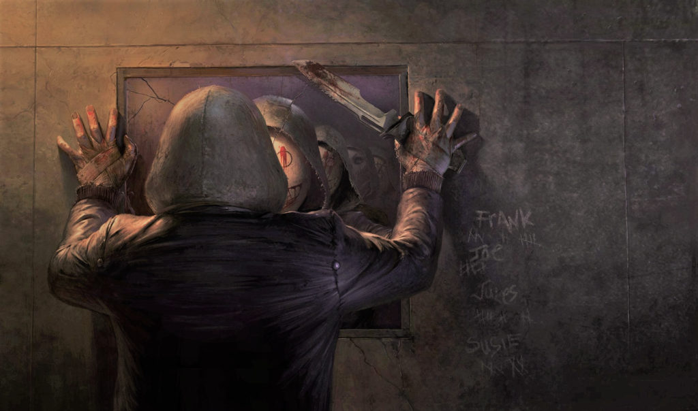

Dead by Daylightについて！
Dead by Daylight (通称DBD)はカナダのゲーム会社Behaviour Interactiveが開発した非対称型対戦サバイバルホラーゲーム
プレイヤーは生存者と殺人鬼に別れゲームをプレイする
生存者の行動

生存者はフィールド上の発電機のうち5つを修理して電源を回復させ、2つあるゲートのうちのどちらかを開いて脱出することが目的である。
発電機を修理することで修理ゲージが上昇し、ゲージが満タンになると修理が完了したとみなされる。ただし、修理中の発電機は音が出ることから殺人鬼に気付かれやすく、ランダムでスキルチェックというQTEが発動し、タイミングに合わせてキーを押すミニゲームが始まる。
もし、スキルチェックに失敗した場合は修理ゲージが減る。しかも発電機の爆発によって大きな音が発生するうえ、殺人鬼側のプレイヤーの画面に爆発を起こした発電機の位置が示されるため、殺人鬼に生存者の居場所が露見する。
殺人鬼の攻撃を2回受けると生存者はその場に這いつくばった状態となり、殺人鬼は倒れた生存者を担ぐことができる。担がれている段階で特定のキーを押し続けてゲージを満たすことにより、振りほどくことができる。
担がれた後にフックに吊るされると生存者の体力が少しずつ減少し、半分を切ると周囲にエンティティと呼ばれる大きな爪のようなものが現れ、対応するキーを連打してもがかなければ、爪に攻撃されて死亡（ゲームから退場）してしまう。
また、体力が底をついてもエンティティが生存者を攻撃し、死亡する。フックに吊るされている時は他の生存者にフックから外してもらうことができ、体力が半分を切っていなければ自力でフックを抜け出すこともできる。
ただし、抜け出せる確率は4%と低く、失敗すると体力が追加で減少する（脱出確率を上昇させるパークや100%抜け出すことができるパークもある）。
倒された状態が長引いたり、フックに3回吊るされる（あるいは体力が半分を切った状態で吊るされると2回）と死亡する。
殺人鬼の行動

殺人鬼の目的は、最終的にすべての生存者をエンティティに捧げる（皆殺しにする）ことである。
殺人鬼は移動速度が速い一方、障害物を乗り越えたり破壊したりする動作が遅い。
生存者が走ると無数の赤い線による痕跡が残り、逃走経路が分かるようになっている。逆に一部の例外を除き、殺人鬼が近づくと生存者に心音が聞こえるため、殺人鬼が姿をさらす前に生存者が逃げることや隠れてしまうこともある。